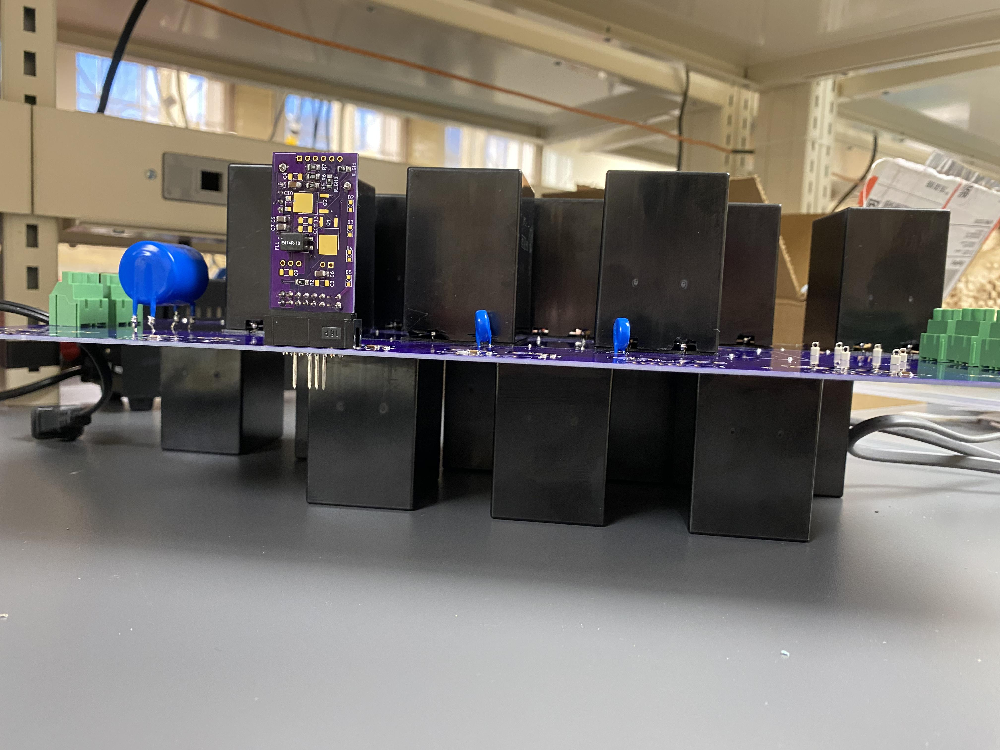
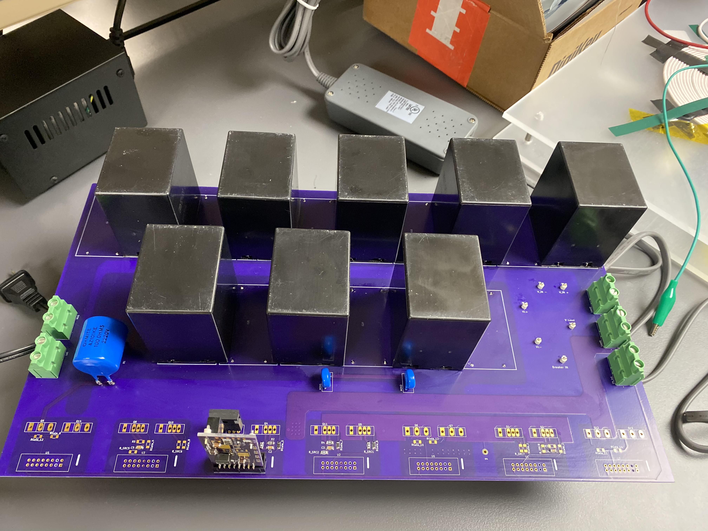
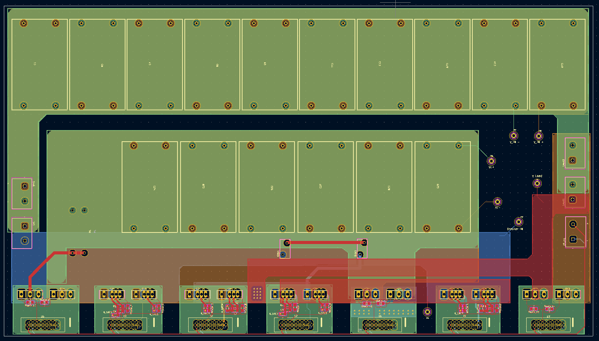
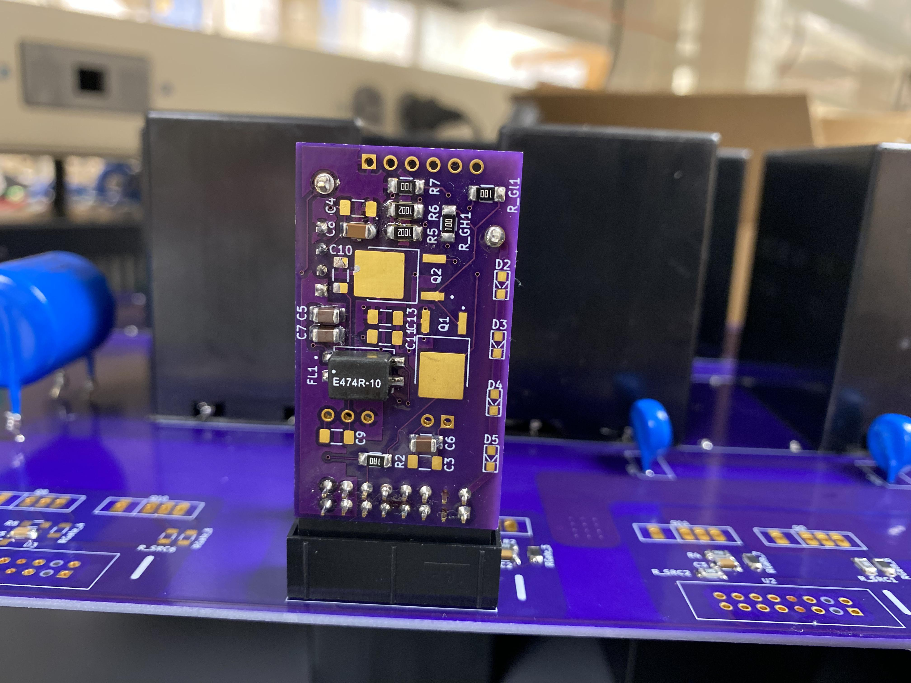
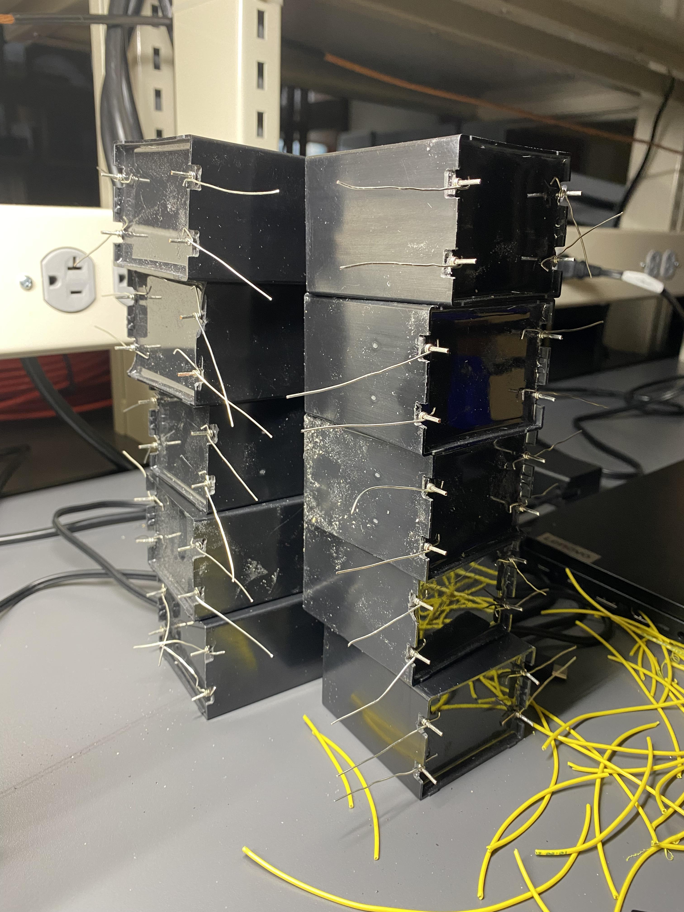
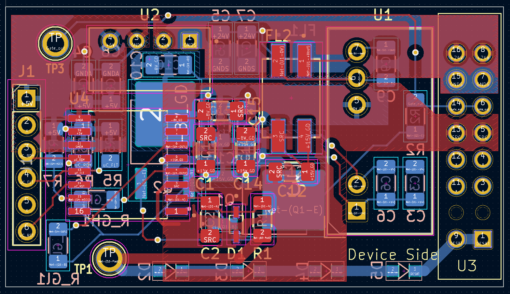
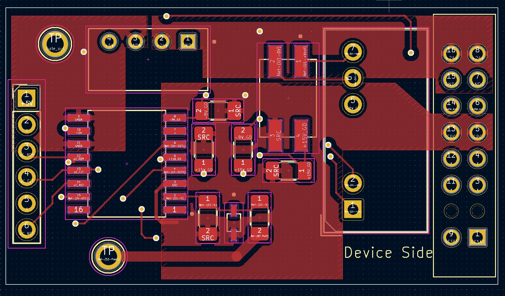
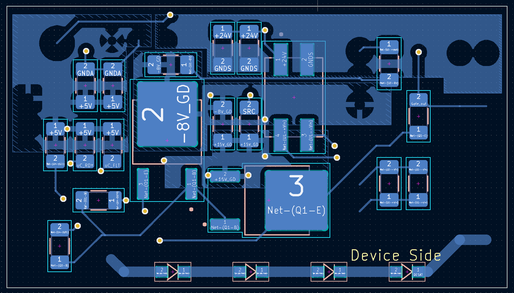

High-Voltage Solid-State Circuit Breaker
Power Board Design
Designing a solid-state switching architecture capable of handling high voltage loads. The design is split between a power board and a dedicated gate drive PCB to maintain signal integrity safely.




Gate Drive & Troubleshooting
Physical layout constraints required creative problem solving. I altered capacitor footprints and manually patched traces on the driver board to ensure the gate drivers could safely activate the high-voltage switches.





